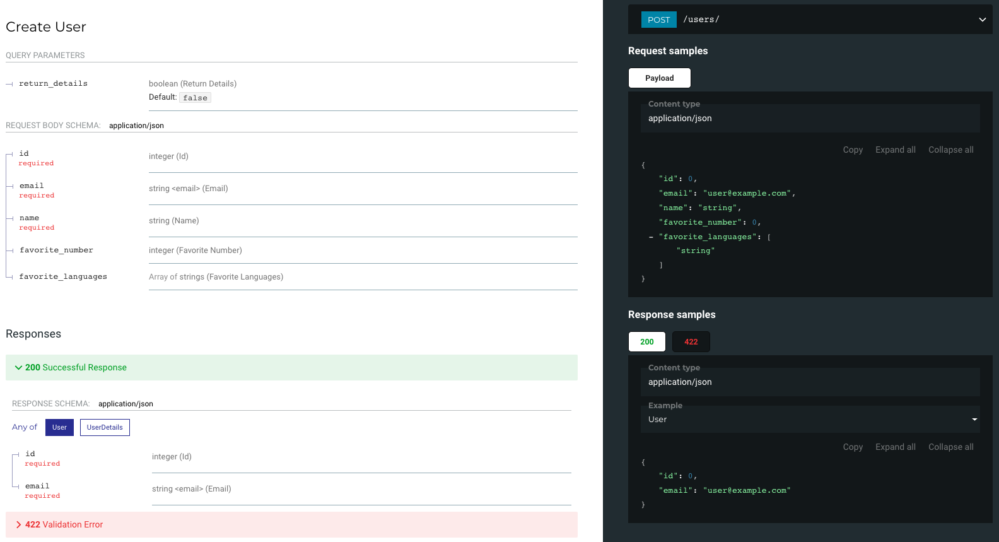
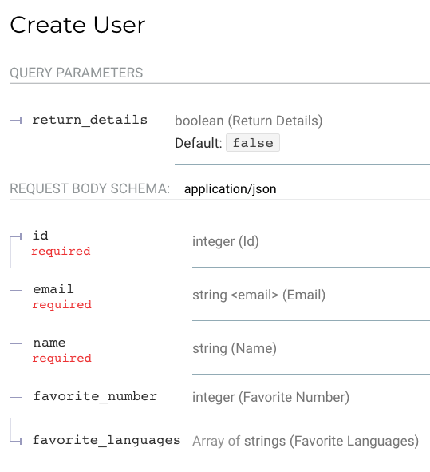
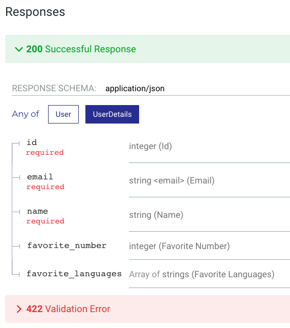
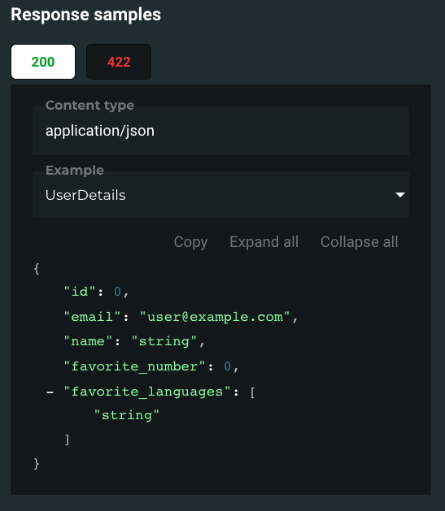

class: center, middle # Wprowadzenie do FastAPI ### Daniel Staśczak Prezentacja przygotowana z użyciem <https://github.com/gnab/remark> --- # $ whoami .center[<img src="images/me.png" height=450>] --- # Czym jest FastAPI? - Pythonowy <img src="images/1024px_python_logo_notext.svg.png" height=24> framework do budowania Web API: - Takich jak REST API, GraphQL <img src="images/1024px_graphql_logo.svg.png" height=24>, czy nawet Websocketów. - Alternatywa dla Django, Flask, Tornado. -- - Nowy... 🆕 ``` $ git log --reverse -1 commit 406c092a3bf65bbd4405ce87611a7e0b9c0ae706 Author: Sebastián Ramírez <tiangolo@gmail.com> *Date: Wed Dec 5 10:56:50 2018 +0400 ``` -- - ... i narzucający nowoczesne narzędzia: Pythona **3.6+** wraz z _type hints_. ??? PEP 563: Postponed Evaluation of Annotations. -- - 3x szybki: w działaniu, do nauki, do pisania. ??? > high performance, easy to learn, fast to code, ready for production -- - Production-ready. --- # Szybki w działaniu .center[<img src="images/benchmark.png" height=400>] .center[Źródło/więcej na: <https://tinyurl.com/r2wnyn2>] --- # Szybki w działaniu - Wspiera asynchroniczność (słowa kluczowe `async`, `await` w Pythonie), w przeciwieństwie do Django <3.0 i Flaska. -- - Wykorzystuje wydajne zależności: - Starlette - modułowy framework ASGI. - Pydantic - (de)serializacja danych na bazie pythonowych _type hints_. ??? Twórca Starlette == twórca Django REST Framework --- # Type hints ??? 1. Ilu z was miało kiedykolwiek do czynienia ze statycznie typowanymi językami programowania? 1. Ilu z was miało kiedykolwiek do czynienia z TypeScriptem? -- Poniższy kod wyrzuci wyjątek: ```python def get_full_name(first_name, last_name): full_name = first_name.title() + " " + last_name.title() return full_name print(get_full_name("Agent", 47)) ``` --- # Type hints Poniższy kod wyrzuci wyjątek: ```python def get_full_name(first_name, last_name): * full_name = first_name.title() + " " + last_name.title() return full_name print(get_full_name("Agent", 47)) ``` ```python AttributeError: 'int' object has no attribute 'title' ``` -- Po dodaniu type hints: ```python *def get_full_name(first_name: str, last_name: str): full_name = first_name.title() + " " + last_name.title() return full_name print(get_full_name("Agent", 47)) ``` --- # Type hints W podstawowym Pythonie: - Nie zapewniają: - Wbudowanego sprawdzania typów. - Zapewniają: - Samodokumentację kodu. - API dla zewnętrznych narzędzi (lintery, autouzupełnianie kodu). --- # Type hints W FastAPI: - Zapewniają: - (De)serializację danych. - Walidację danych. - **Przy okazji** świetną autogenerację dokumentacji API. --- # Pydantic Przykładowy model (przez FastAPI nazywany `schema`): ```python from typing import List from pydantic import BaseModel, EmailStr class User(BaseModel): id: int name: str email: EmailStr favorite_number: int = None favorite_languages: List[str] = None u = User(id=1, name="Foo", email="foo@example.com", favorite_languages=["c++", "python"]) print(u.json()) # {"id": 1, "name": "Foo", "email": "foo@example.com", # "favorite_number": null, "favorite_languages": ["c++", "python"]} u = User(name="Bar", email='bar.example.com') # pydantic.error_wrappers.ValidationError: 2 validation errors for User # id # field required (type=value_error.missing) # email # value is not a valid email address (type=value_error.email) ``` --- # Starlette ```python from starlette.applications import Starlette from starlette.responses import JSONResponse from starlette.routing import Route async def homepage(request): return JSONResponse({'hello': 'world'}) app = Starlette(debug=True, routes=[ Route('/hello', homepage), ]) ``` ```shell $ uvicorn example:app ``` -- `GET http://127.0.0.1:8000/hello` ```json { "hello": "world" } ``` --- # Definiowanie endpointów w FastAPI ### Parametr jako część URL ```python @app.get("/items/{item_id}") async def read_item(item_id: int): return {"item_id": item_id} ``` `GET http://127.0.0.1:8000/items/42` ```json { "item_id": 42 } ``` --- # Definiowanie endpointów w FastAPI ### Parametr jako część URL ```python @app.get("/items/{item_id}") async def read_item(item_id: int): return {"item_id": item_id} ``` `GET http://127.0.0.1:8000/items/foo` ```json { "detail": [ { "loc": [ "path", "item_id" ], "msg": "value is not a valid integer", "type": "type_error.integer" } ] } ``` --- # Definiowanie endpointów w FastAPI ### Query parameters ```python fake_items_db = list(range(100)) @app.get("/items/") async def read_item(skip: int = 0, limit: int = 10): return fake_items_db[skip: skip + limit] ``` `GET http://127.0.0.1:8000/items/` ```json [ 0, 1, 2, 3, 4, 5, 6, 7, 8, 9 ] ``` --- # Definiowanie endpointów w FastAPI ### Query parameters ```python fake_items_db = list(range(100)) @app.get("/items/") async def read_item(skip: int = 0, limit: int = 10): return fake_items_db[skip: skip + limit] ``` `GET http://127.0.0.1:8000/items/?skip=10` ```json [ 10, 11, 12, 13, 14, 15, 16, 17, 18, 19 ] ``` --- # Definiowanie endpointów w FastAPI ### Query parameters ```python fake_items_db = list(range(100)) @app.get("/items/") async def read_item(skip: int = 0, limit: int = 10): return fake_items_db[skip: skip + limit] ``` `GET http://127.0.0.1:8000/items/?skip=10&limit=2` ```json [ 10, 11 ] ``` --- # Definiowanie endpointów w FastAPI ### Query parameters ```python fake_items_db = list(range(100)) @app.get("/items/") async def read_item(skip: int = 0, limit: int = 10): return fake_items_db[skip: skip + limit] ``` `GET http://127.0.0.1:8000/items/?skip=10.0` ```json { "detail": [ { "loc": [ "query", "skip" ], "msg": "value is not a valid integer", "type": "type_error.integer" } ] } ``` --- # Definiowanie endpointów w FastAPI ### Dodatkowa walidacja ```python from fastapi import Query @app.get("/items/") async def read_items(q: str = Query(None, min_length=2, max_length=10)): ``` `GET http://127.0.0.1:8000/items/?q=1` ```json { "detail": [ { "loc": [ "query", "q" ], "msg": "ensure this value has at least 2 characters", "type": "value_error.any_str.min_length", "ctx": { "limit_value": 2 } } ] } ``` --- # Definiowanie endpointów w FastAPI ### Z wykorzystaniem modeli Pydantic ```python class User(BaseModel): id: int email: EmailStr class UserDetails(User): name: str favorite_number: int = None favorite_languages: List[str] = None @app.post("/users/", response_model=Union[UserDetails, User]) async def create_user(user: UserDetails, return_details: bool = False): if return_details: return user return User(**user.dict()) ``` --- # **Przy okazji** dokumentacja API .center[] ??? Porównanie ze `@swagger_auto_schema` w Django --- # **Przy okazji** dokumentacja API ### Żądanie .center[] --- # **Przy okazji** dokumentacja API ### Żądanie .center[<img src="images/redoc_request_example.png" height=400>] --- # **Przy okazji** dokumentacja API ### Odpowiedź .center[<img src="images/redoc_response_parameters_user.png" height=400>] --- # **Przy okazji** dokumentacja API ### Odpowiedź .center[] --- # **Przy okazji** dokumentacja API ### Odpowiedź .center[<img src="images/redoc_response_example_user.png" height=400>] --- # **Przy okazji** dokumentacja API ### Odpowiedź .center[] --- # **Przy okazji** dokumentacja API Dostępna jako: - ReDoc. - Swagger UI (👎 nie wszystko działa, 👍 interaktywne zapytania). - Plik `openapi.json`. --- # Znalezione na ten moment wady FastAPI Kolejność ma znaczenie 👎 ```python @app.get("/users/{user_id}") async def read_user(user_id: str): return {"user_id": user_id} @app.get("/users/me") async def read_user_me(): return {"user_id": "the current user"} ``` `GET http://127.0.0.1:8000/users/me` ```json { "user_id": "me" } ``` -- ```python *@app.post("/users/", response_model=Union[UserDetails, User]) async def create_user(user: UserDetails, return_details: bool = False): if return_details: return user return User(**user.dict()) ``` --- # Znalezione na ten moment wady FastAPI Nie działa _self-referencing models_ 👎 ```python from typing import List from pydantic import BaseModel class Foo(BaseModel): id: int * parent: List["Foo"] = None *Foo.update_forward_refs() ``` -- <https://docs.python.org/3/whatsnew/3.7.html#pep-563-postponed-evaluation-of-annotations> ```python *from __future__ import annotations from typing import List from pydantic import BaseModel class Foo(BaseModel): id: int * parent: List[Foo] = None Foo.update_forward_refs() ``` --- # Znalezione na ten moment wady FastAPI Walidacja z użyciem <https://pydantic-docs.helpmanual.io/usage/validators/> ```python class UserDetails(User): name: str favorite_number: int = None favorite_languages: List[str] = None @validator('name') def contains_space(cls, value): if " " not in value: raise ValueError('must contain a space') return value ``` W FastAPI czasami to działa, czasami nie 👎 --- # Middleware Bazuje na mechanizmie middleware Starlette: ```python import time from fastapi import FastAPI from starlette.requests import Request app = FastAPI() @app.middleware("http") async def add_process_time_header(request: Request, call_next): start_time = time.time() * response = await call_next(request) process_time = time.time() - start_time response.headers["X-Process-Time"] = str(process_time) * return response ``` --- # Middleware Bazuje na mechanizmie middleware Starlette: ```python import time from fastapi import FastAPI from starlette.requests import Request app = FastAPI() @app.middleware("http") async def add_process_time_header(request: Request, call_next): * start_time = time.time() response = await call_next(request) * process_time = time.time() - start_time * response.headers["X-Process-Time"] = str(process_time) return response ``` --- # Middleware Kompatybilny z mechanizmem middleware Starlette: ```python from fastapi import FastAPI *from starlette.middleware.cors import CORSMiddleware from starlette_prometheus import PrometheusMiddleware, metrics app = FastAPI() *app.add_middleware( * CORSMiddleware, * allow_origins=[], * allow_credentials=True, * allow_methods=["*"], * allow_headers=["*"], *), app.add_middleware(PrometheusMiddleware) app.add_route("/metrics/", metrics) ``` --- # Middleware Kompatybilny z mechanizmem middleware Starlette: ```python from fastapi import FastAPI from starlette.middleware.cors import CORSMiddleware *from starlette_prometheus import PrometheusMiddleware, metrics app = FastAPI() app.add_middleware( CORSMiddleware, allow_origins=[], allow_credentials=True, allow_methods=["*"], allow_headers=["*"], ), *app.add_middleware(PrometheusMiddleware) *app.add_route("/metrics/", metrics) ``` --- # Dependency injection ```python import string from fastapi import FastAPI, Query app = FastAPI() integers = list(range(100)) strings = list(string.ascii_letters + string.digits) @app.get("/integers/") async def read_integers(skip: int = 0, limit: int = Query(10, le=10)): return integers[skip : skip + limit] @app.get("/strings/") async def read_strings(skip: int = 0, limit: int = Query(10, le=10)): return strings[skip : skip + limit] ``` ??? Middleware - wykonuje się dla _każdego_ requestu, nawet tych które go explicit nie wykorzystują. Dependency injection - wykonuje się tylko w przypadku requestów, dla których został zdefiniowany. --- # Dependency injection ```python import string from fastapi import FastAPI, Query, Depends app = FastAPI() integers = list(range(100)) strings = list(string.ascii_letters + string.digits) *async def pagination_parameters(skip: int = 0, limit: int = Query(10, le=10)): * return {"skip": skip, "limit": limit} @app.get("/integers/") async def read_integers(pagination = Depends(pagination_parameters)): return integers[pagination["skip"] : pagination["skip"] + pagination["limit"]] @app.get("/strings/") async def read_strings(pagination = Depends(pagination_parameters)): return strings[pagination["skip"] : pagination["skip"] + pagination["limit"]] ``` --- # Dependency injection ```python import string *from fastapi import FastAPI, Query, Depends app = FastAPI() integers = list(range(100)) strings = list(string.ascii_letters + string.digits) async def pagination_parameters(skip: int = 0, limit: int = Query(10, le=10)): return {"skip": skip, "limit": limit} @app.get("/integers/") *async def read_integers(pagination = Depends(pagination_parameters)): * return integers[pagination["skip"] : pagination["skip"] + pagination["limit"]] @app.get("/strings/") *async def read_strings(pagination = Depends(pagination_parameters)): * return strings[pagination["skip"] : pagination["skip"] + pagination["limit"]] ``` ??? Dość trywialny przykład, nadal wymagana jest tutaj duplikacja kodu, jednakże da się go łatwo uprościć jeszcze bardziej, gdyż dependency injection w FastAPI pozwala na tworzeniu dependency również na bazie całych klas. --- # Dependency injection ```python from fastapi import Depends, FastAPI, Header, HTTPException app = FastAPI() async def verify_token(x_token: str = Header(...)): if x_token != "fake-super-secret-token": raise HTTPException(status_code=400, detail="X-Token header invalid") *@app.get("/items/", dependencies=[Depends(verify_token)]) async def read_items(): return [{"item": "Foo"}, {"item": "Bar"}] ``` --- # Integracja z bazą danych - Niewbudowana we framework: wymagane użycie zewnętrznych sterowników lub ORM. -- - Co pozwala na dużą dowolność: możliwa integracja zarówno z bazami SQL (również poprzez SQLAlchemy, Peewee), jak i NoSQL. -- - A także asynchroniczne interfejsy baz danych: - <https://github.com/python-gino/gino>. - <https://github.com/encode/databases>. -- - Migracje baz danych: <https://github.com/sqlalchemy/alembic>. --- # Szablon projektu <https://fastapi.tiangolo.com/project-generation/> ### Zapewnia (między innymi) - Konfigurację Dockera. - Autoryzację użytkowników. - Modele SQLAlchemy i migracje Alembic. - Konfigurację Celery. - Pytest. - ~~Admin-like~~ dashboard (zaimplementowany we Vue.js). - Dwa warianty: z bazą danych PostgreSQL albo Couchbase. --- # Szablon projektu <https://fastapi.tiangolo.com/project-generation/> ### Zapewnia (między innymi) - Konfigurację Dockera. **`docker-compose.yml` rozbite na milion plików.** - Autoryzację użytkowników. **Bardzo bazowa.** - Modele SQLAlchemy i migracje Alembic. - Konfigurację Celery. - Pytest. **Kiepska jakość implementacji.** - ~~Admin-like~~ dashboard (zaimplementowany we Vue.js). - Dwa warianty: z bazą danych PostgreSQL albo Couchbase. - **Brak asynchroniczności.** --- class: center, middle # Czy rzeczywiście jest production-ready? ??? Wspomnieć, że jest już używany w LESS\_ --- class: center, middle # Pytania? ??? Czytelna, beginner-friendly